Evil Design
Manipulative Designtechniken im Web
Author: Jonas Jared Jacek · License: CC BY-NC-ND 4.0Vortragszeit: ~30 min
Onlineversion unter:
Themen
- Einleitung
Begriffszuordnung / Abgrenzung, Geschichte und Psychologie. - Beispiele
Warum manipulative Designs funktionieren. - Tipps
Manipulative Designtechniken richtig (positiv) einsetzen. - Literaturhinweise
Hinweise zu Büchern, Webseiten und Videos.
Teil 1
Einleitung
Begriffszuordnung / Abgrenzung, Geschichte und Psychologie.
Design-Typen
Grundsätzliche Unterscheidung folgender Design-Typen in dieser Präsentation:
- aufrichtiges Design
- überzeugendes Design
- täuschendes Design
Design-Typen Skala
Bezugssystem von ehrlich zu unehrlich.
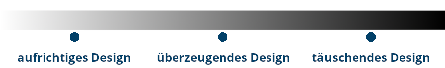 Ausschnitt Design-Typen Skala (unvollständig in beide Richtungen).Fokussierung
Diese Präsentation fokussiert sich auf überzeugendes Design.
Der Vollständigkeit halber wird auf aufrichtiges Design eingegangen, spaßeshalber auf täuschendes Design.
Abgrenzung
Folgende Begrifflichkeiten wollen wir verorten …
- Evil Design
- Webstandards
- Persuasive Design
- User Experience (UX)
- Dark User Experience (dark UX)
- Barrierefreiheit
- Dark Design Patterns
- …
Aufrichtiges Design
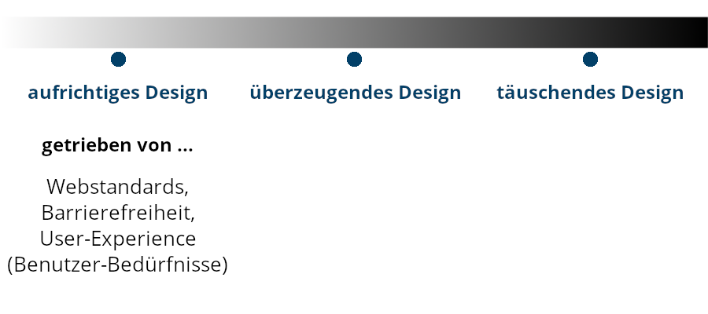 Design orientiert sich am Benutzer und seinen vielfältigen Bedürfnissen, auch auf Kosten kurzfristiger Gewinne (z.B. Conversion Rate).Aufrichtiges Design - Beispiel
Webseite des australischen Wesley LifeForce-Programms (Suizidprävention) - ohne manipulierende Überzeugungsarbeit.
https://www.wesleymission.org.au/
Aufrichtiges Design - Beispiel
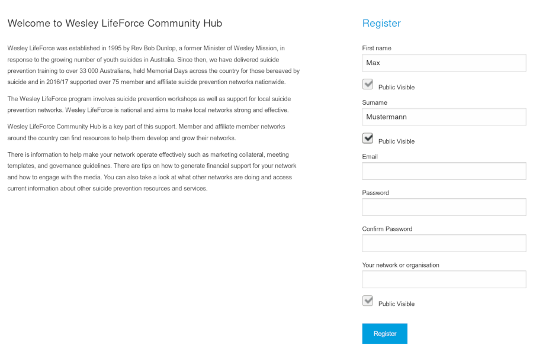Abgrenzung
Folgende Begrifflichkeiten wollen wir verorten …
- Evil Design
Webstandards- Persuasive Design
User Experience (UX)- Dark User Experience (dark UX)
Barrierefreiheit- Dark Design Patterns
- …
Überzeugendes Design
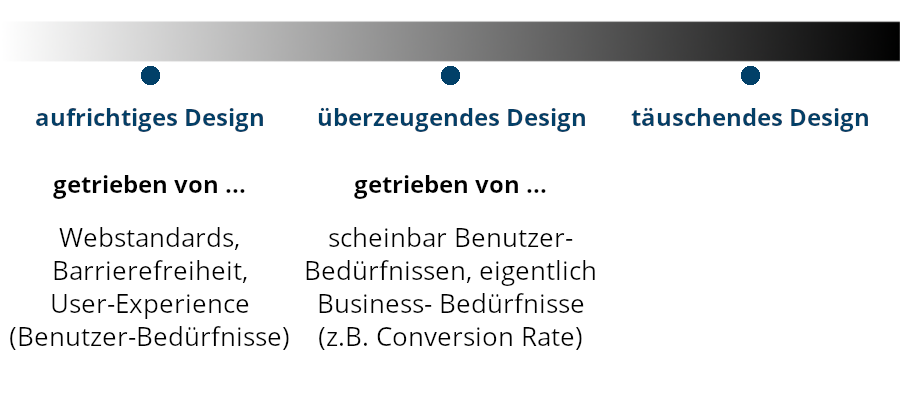 Überzeugendes Design überzeugt Benutzer fälschlicherweise davon, dass das Nutzenversprechen in ihrem eigenen Interesse liegt. Kann auch böse sein.Überzeugendes Design - Beispiel
Webseite der hamburger Partnervermittlung Parship - mit manipulierender Überzeugungsarbeit.
https://www.parship.de/
Überzeugendes Design - Beispiel
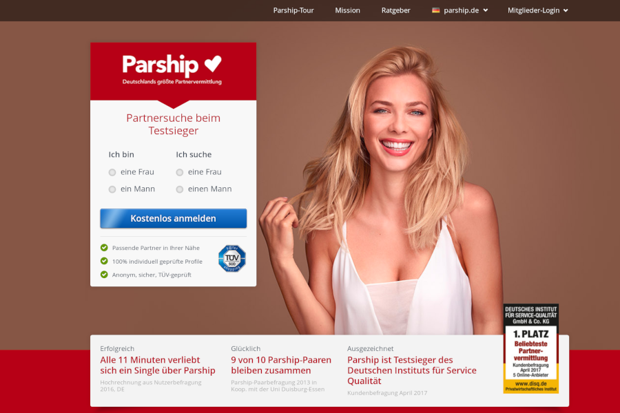Abgrenzung
Folgende Begrifflichkeiten wollen wir verorten …
Evil DesignWebstandardsPersuasive DesignUser Experience (UX)- Dark User Experience (dark UX)
Barrierefreiheit- Dark Design Patterns
- …
Täuschendes Design
 Folgt Business-Bedürfnissen, welche für Benutzer unzweifelhaft täuschend/trügerisch sind, jedoch noch rechtlich einwandfrei.
Folgt Business-Bedürfnissen, welche für Benutzer unzweifelhaft täuschend/trügerisch sind, jedoch noch rechtlich einwandfrei.
Täuschendes Design - Beispiel 1
Täuschendes Design - Beispiel 2
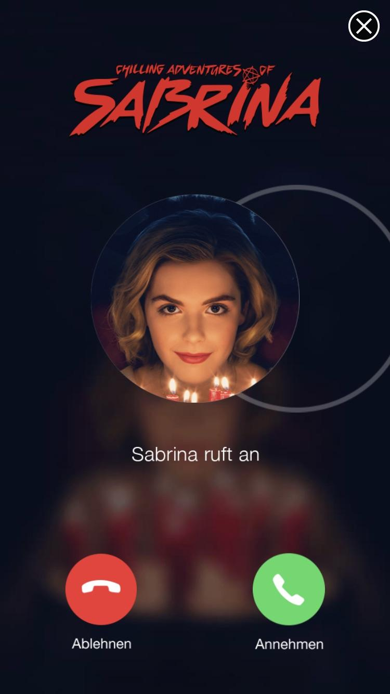- aufrichtiges Design
- Webstandards
- User Experience (UX)
- Barrierefreiheit
- überzeugendes Design
- Evil Design
- Persuasive Design
- täuschendes Design
- Dark User Experience (dark UX)
- Dark Design Patterns
Geschichte
2004 nannte man manipulierende Designtechniken noch "Landing Page / Conversion-Rate Optimization Tips".
Ein beliebter Trick damals, zur Steigerung von Click-Through Rates (CTR) Adsense-Anzeigen …

… kleine Bildchen neben Google AdSense-Anzeigen. Ist schon seit langem verboten.

Die Tricks sind nicht neu, man musste Sie nur erstmal erkennen und benennen.
Terminologie
Die Terminologie und die Einordnung in einem bestimmten Bezugssystem (Design-Typen Skala), fand erstmalig (ungefähr) in den Jahren 2010/2011 statt.
Kurze Geschichte des WWW
- 1989: Erfindung des Web
"Initiative zur Informationsbeschaffung um Zugang zu Dokumenten zu erlauben." - 1996–1998: Kommerzialisierung
Einfaches, freies publizieren, z.B. Börsennotierte Unternehmen. - 1999–2001: Dotcom-Blase
Unerfüllte Gewinnerwartungen. Es fehlten die Teilnehmer im World Wide Web. - 2002–2009: Lernphase
Entwicklung von Geschäftsmodellen. Browser- & Technologie-Wildwuchs. - Ab 2009: Web wird erwachsen
Analytics. Kausalitäten werden klar. Analyse Ursache und Wirkung.
Die in der Lernphase gemachten Erfahrungen werden in Kontext mit anderen Disziplinen wie Design und Psychologie gebracht und neu betrachtet.
Die beobachteten Effekte und Zusammenhänge ermöglichten zu erkennen, wo Design z.B. manipulativ ist.
Termini
So enstanden Fachbegriffe wie …
- Evil Design
- Persuasive Design
- Dark User Experience (dark UX)
- Dark Design Patterns
Psychologie
Wie und warum funktioniert manipulatives Design?
Zur Klärung der Frage müssen wir das weite Feld der Psychologie "ein wenig" vereinfachen um es handhabbar zu machen.
Vorarbeit
Der Psychologie-Teil dieser Präsentation bedient sich schamlos aus Chris Nodder's Buch "Evil By Design → Standardwerk (Bibel) für manipulatives Design im Web.
Kunstgriff
In dem Buch werden Evil-Designtechniken unter den Überschriften der Sieben Todsünden zusammengefasst.
Die sieben Todsünden
- Stolz
- Trägheit
- Völlerei
- Zorn
- Neid
- Lust
- Gier
Die Sünden stehen für menschliche Schwächen.
Die Schwächen lassen sich, u.a. mithilfe von Design, ausnutzen um Benutzer zu manipulieren.
Zu "Design" gehört dabei …
- visuelle Präsentation
- Interaction Design (IxD)
- Inhalte
- …
Wie das konkret aussehen kann, gucken wir uns jetzt mithilfe einiger Beispiele an.
Teil 2
Beispiele
Wie manipulative Designs funktionieren.
1. Todsünde: Stolz
Arroganz. Überschätzung der eigenen Fähigkeiten. Denken, dass man nichts falsch machen kann.
Benutzer wollen stolz sein: Gefühl zu vermitteln, dass das Produkt richtig und gut ist. Das man Stolz darauf sein kann, es zu nutzen.Stolz Bewahren
Gründe für Stolz präsentieren:
- Bulletliste mit den wichtigsten Produktfeatures
- Bewertungen zeigen (Sterne)
- Trust-Logos zeigen
- Auszeichnungen zeigen
- Best-Price Versprechen
- …
Stolz - Ausnutzung - Beispiele
Parship:
- Bulletliste mit den wichtigsten Produktfeatures
- Trust-Logos zeigen
- Auszeichnungen zeigen
- …
https://www.parship.de/
Stolz - Ausnutzung - Beispiele
Stolz - Ausnutzung - Beispiele
Sixt - Autovermietung:
- Bulletliste mit den wichtigsten Produktfeatures
- Best-Price Versprechen
- Trust-Logos zeigen (sogar Quatsch-Logos)
- …
https://www.sixt.de/
Stolz - Ausnutzung - Beispiel 2
Stolz - Ausnutzung - Trust Logos
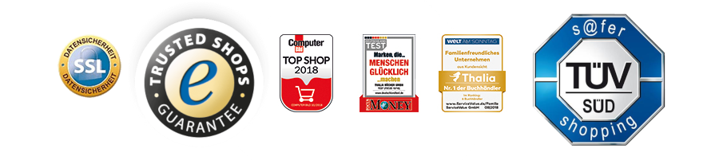 Vertrauen — und damit Stolz — sind ein Geschäft.Diese Logos geben ein gutes Gefühl.
Gleiches gilt für Produktbewertungen.
"Bis zu 30% mehr Umsatz".
Stolz - Ausnutzung - Bewertungen
 Vertrauen — und damit Stolz — sind ein Geschäft.
Vertrauen — und damit Stolz — sind ein Geschäft.
2. Todsünde: Trägheit
Faulheit. Benutzter wollen nur das absolute Minimum an Arbeit tun, um ihre Ziele zu erreichen.
Benutzer verlangen einfach zu bedienende Websiten. Sie folgen dem Weg des minimalem Aufwand/Widerstand um Ihre Ziele zu verfolgen. Sie verlassen Websiten, die zu sehr anstrengen.F-Pattern
Eyetracking-Visualisierungen zeigen, dass Benutzer Webseiten häufig in einem F-förmigen Muster scannen.
Was im F-Pattern nicht enthalten ist, wird oft übersehen.
Trägheit Ausnutzen
Benutzer führen:
- Fokus im F-Pattern
- Highlighting von wichtigen Produkten
- Limitierung des Angebots
- Empfehlung aussprechen
- …
Trägheit - Ausnutzung - Beispiele
Microsoft One Drive Produktübersicht:
- fokussiert teure Produkte im F-Pattern.
- highlighted Buttons von Bezahlprodukten.
- Limitierung des Angebots
https://onedrive.live.com/about/en-us/plans/
Trägheit - Ausnutzung - Beispiele
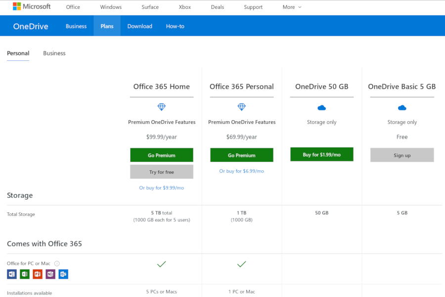Trägheit - Ausnutzung - Beispiele
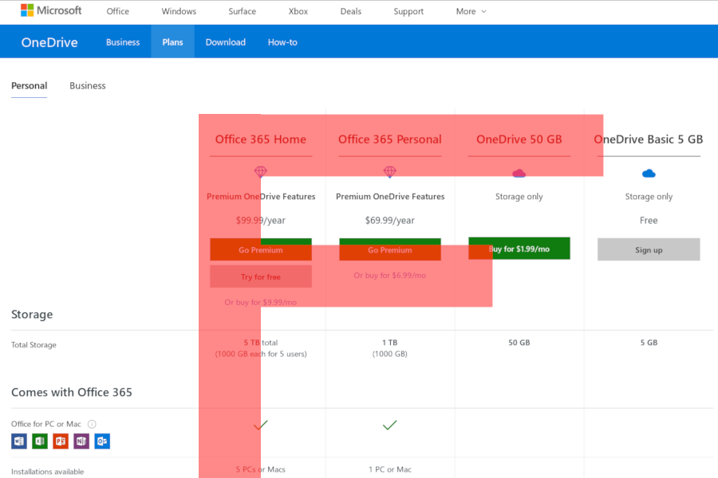Diese Form der Produktübersicht ist meist genau andersrum aufgebaut (von günsig zu teuer).
Trägheit - Ausnutzung - Beispiele
Hosteurope - Webhosting-Pakete:
- Fokus im F-Pattern
- Highlighting von wichtigen Produkten
- Limitierung des Angebots
- Empfehlung aussprechen
- …
https://www.hosteurope.de/WebHosting/
Trägheit - Ausnutzung - Beispiele
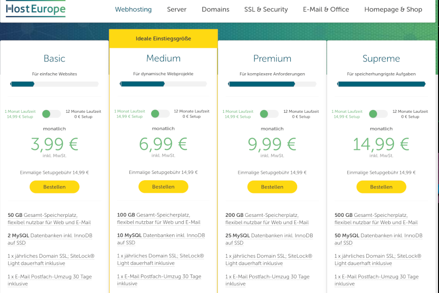3. Todsünde: Völlerei
Reichtum sammeln und zur Schau stellen (z.B. Likes, Freunde, etc.).
Knappheit, Exklusivität und Verlustaversion sind die Ängste hinter der Völlerei.
Benutzer wollen sammeln, achievements unlocken, die 100% voll machen. Besonders sein (Verifizierung), viele Freunde haben, viel konsumieren.Völlerei Ausnutzen
Benutzer sind Jäger und Sammler:
- Likes & Freunde / Dinge sammeln
- Unendlich Inhalte anbieten (infinite scrolling)
- Höherstellung / Verifikation anbieten
- Angebot verknappen (Verlustängste)
- Eine Vervollständigung einfordern (Tendenz zum komplettieren nutzen)
- …
Völlerei - Ausnutzung - Beispiele
LinkedIn - Social Network:
- Likes & Freunde / Dinge sammeln
- Unendlich Inhalte anbieten (infinite scrolling)
- Höherstellung / Verifikation anbieten
- Angebot verknappen (Verlustängste)
- Eine Vervollständigung einfordern
(Tendenz zum komplettieren nutzen) - …
https://www.linkedin.com/
Völlerei - Ausnutzung - Beispiele
Völlerei - Ausnutzung - Beispiele
Couchsurfing - Gratis Airbnb:
- Likes & Freunde / Dinge sammeln
- Höherstellung / Verifikation anbieten
- Angebot verknappen (Verlustängste)
- …
https://www.couchsurfing.com/
Völlerei - Ausnutzung - Beispiele
4. Todsünde: Zorn
Zorn und Wut sind negative Gefühle und haben negative Auswirkungen auf Urteilsvermögen und Entscheidungsfindung.
Als Webseitenbetreiber will man Zorn und Wut verhindern oder abmildern.Zorn Abmildern
Benutzer einlullen und positiv stimmen:
- Humor nutzen
- freundliche / lustige Bilderwelt nutzen
- von Ärgernis ablenken
- Ventil anbieten
- …
Zorn - Abmildern - Beispiele
Chrome Browser - T-Rex-Spiel bei Nichtverfügbarkeit von Internet:
- freundliche / lustige Bilderwelt nutzen
- von Ärgernis ablenken
- …
Vgl. https://chromedino.com/
Zorn - Abmildern - Beispiele
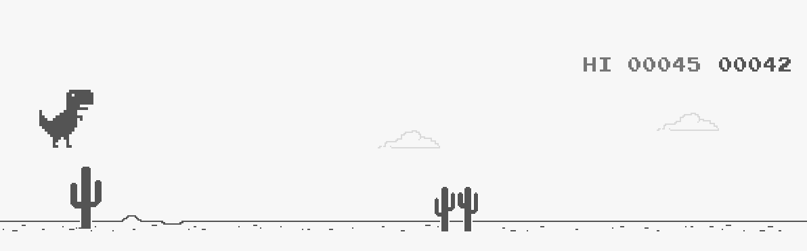Zorn - Abmildern - Beispiele
Jameda - Arztempfehlungsportal - 404 Seite:
- Humor nutzen
- freundliche / lustige Bilderwelt nutzen
- …
https://www.jameda.de/404
Zorn - Abmildern - Beispiele
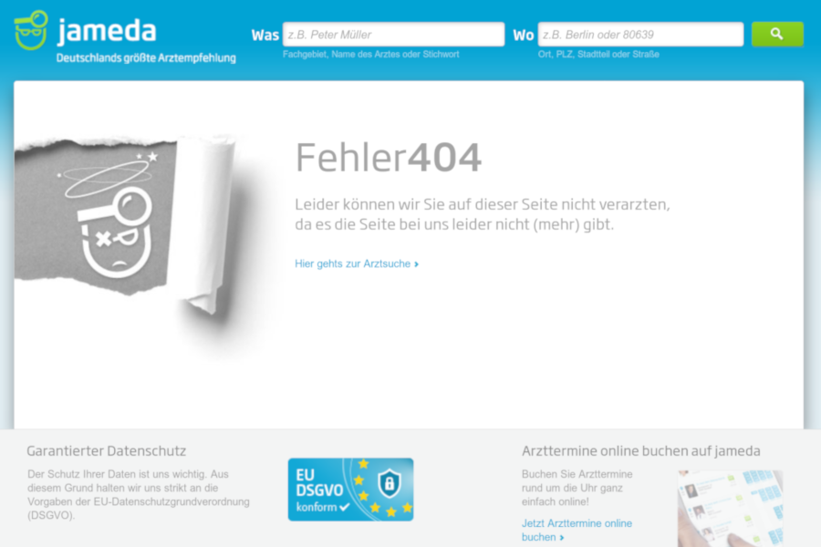Zorn - Abmildern - Beispiele
.sucks - Domain Name für Kundenfeedback-Seiten:
- Humor nutzen
- Ventil anbieten
- …
https://www.get.sucks/
Zorn - Abmildern - Beispiele
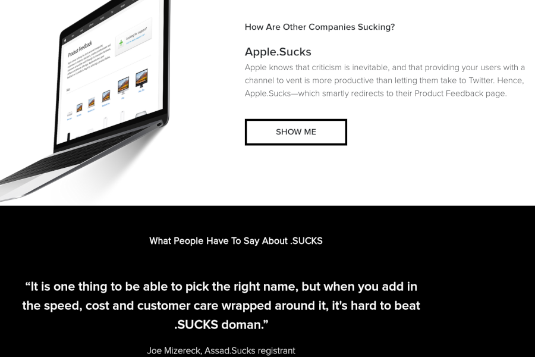5. Todsünde: Neid
Viel oder mehr als andere haben wollen.
Gefühle der Entbehrung / Minderwertigkeit sind die Grundlage des Neides.
Produkte müssen begehrenswert sein, damit Neid als motivierende Kraft wirken kann.Neid - Ausznutzung
Produkte begehrenswert gestalten.
- knapp, begrenzte Verfügbarkeit
- identitätsstiftend (Unterscheidung von Anderen)
- ästhetisch, funktionell (mehr Funkionen)
- …
Neid - Ausznutzung - Beispiele
Airbnb - Superhost-Programm.
- knapp, begrenzte Verfügbarkeit
- identitätsstiftend (Unterscheidung von Anderen)
- ästhetisch, funktionell (mehr Funkionen)
- …
https://www.airbnb.de/superhost
Neid - Ausznutzung - Beispiele
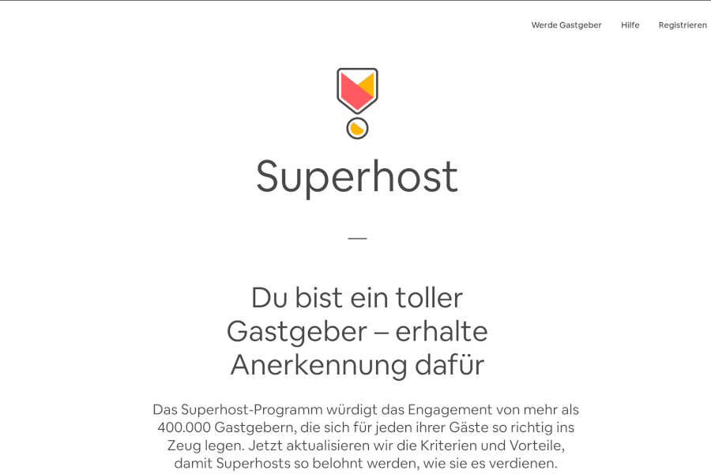Neid - Ausznutzung - Beispiele
Neid - Ausznutzung - Beispiele
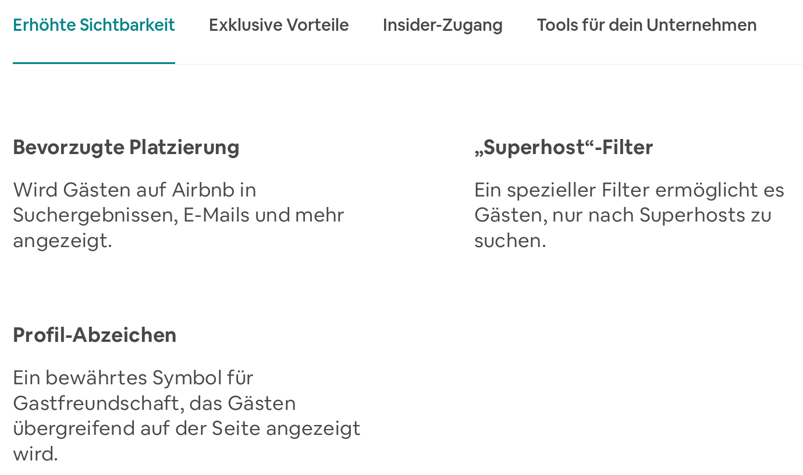Neid - Ausznutzung - Beispiele
Soundcloud - Pro-Programm.
- identitätsstiftend (Unterscheidung von Anderen)
- ästhetisch, funktionell
(mehr Funkionen, allerdings ohne Mehrwert für Besucher) - …
https://soundcloud.com/pro
Neid - Ausznutzung - Beispiel 3
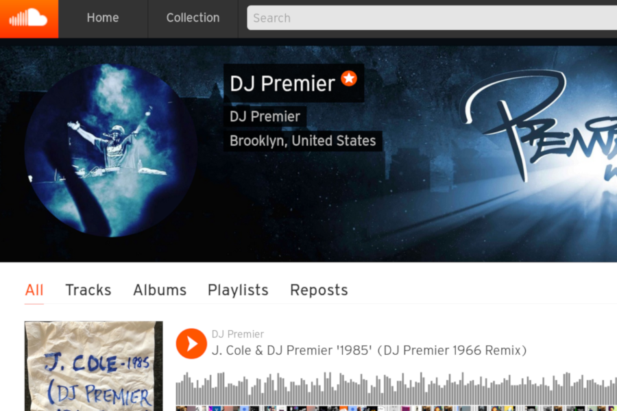6. Todsünde: Lust
Lust steht für ein intensives Verlangen nach einem Produkt.
Wer etwas begehrt, hört auf rational zu denken und sucht nach zusätzlichen Gründen, um es zu haben.
Hat ein Benutzer dieses Verlangen, bedarf es nicht viel Anstoß, den Wunsch in die Tat umzusetzen: Etwas kleines, was die Lust fördert und somit die Barrieren des rationalen Denkens durchbricht.Lust - Ausnutzung
Lust befördern:
- niedriger Einstiegspreis
- kleine Geschenke (kostenlose Lieferung)
- Sicherheit geben (Rückgaberecht)
- persönliche Ansprache
- …
Lust - Ausznutzung - Beispiele
Sonos - WLAN basiertes Home Sound System
- niedriger Einstiegspreis
- kleine Geschenke (kostenlose Lieferung)
- Sicherheit geben (Rückgaberecht)
- …
https://www.sonos.com/
Lust - Ausznutzung - Beispiele
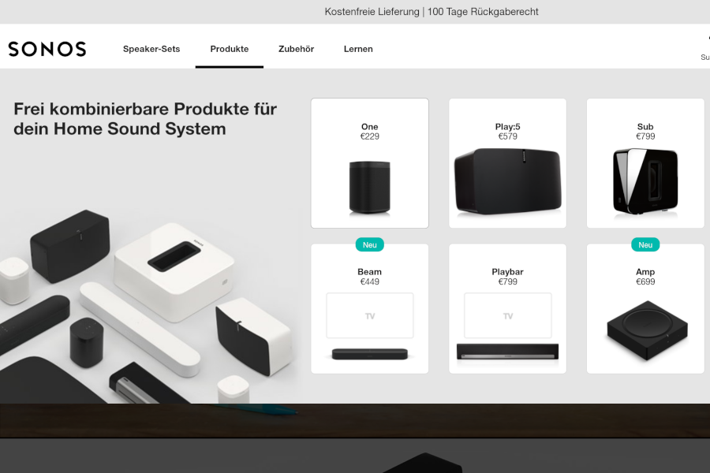Kunden kaufen mehr als ein Produkt, also kann man beim Ersten die Lust fördern.
Lust - Ausznutzung - Beispiele
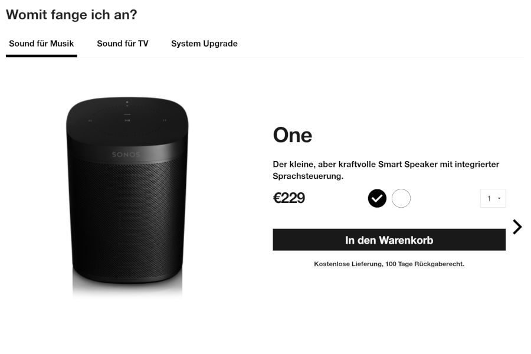Lust - Ausznutzung - Beispiele
Ryanair - Billigfluglinie
- niedriger Einstiegspreis
- kleine Geschenke (Vergünstigung)
- persönliche Ansprache
- …
https://www.ryanair.com/de/de/
Lust - Ausznutzung - Beispiele
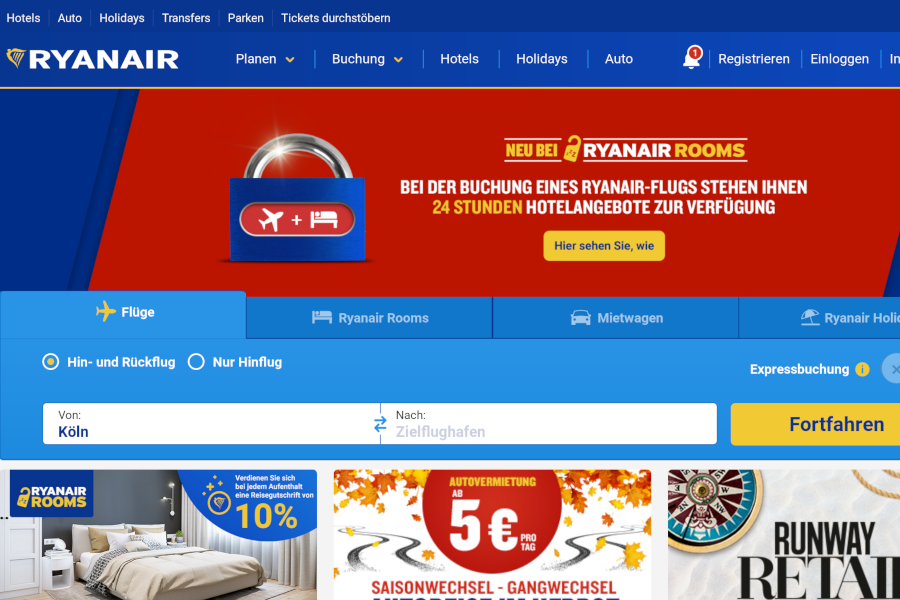Lust - Ausznutzung - Beispiele
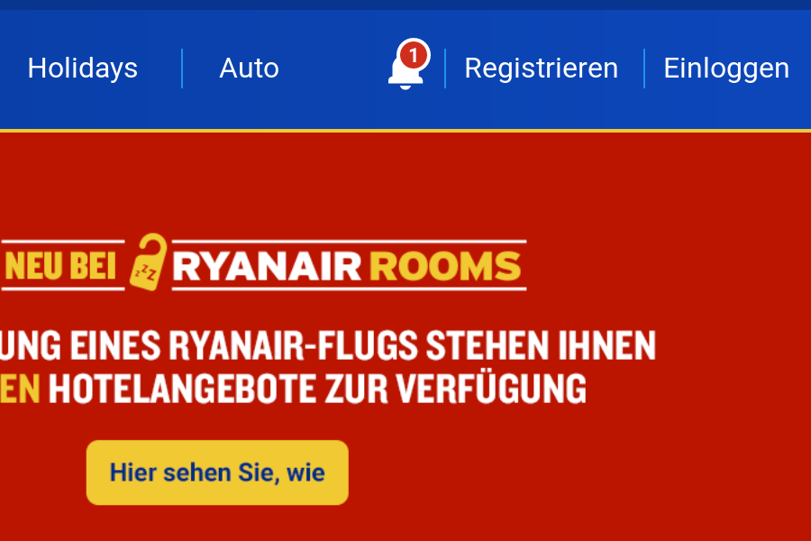Die scheinbar private Nachricht enthält ein kleines Geschenk.
Lust - Ausznutzung - Beispiele
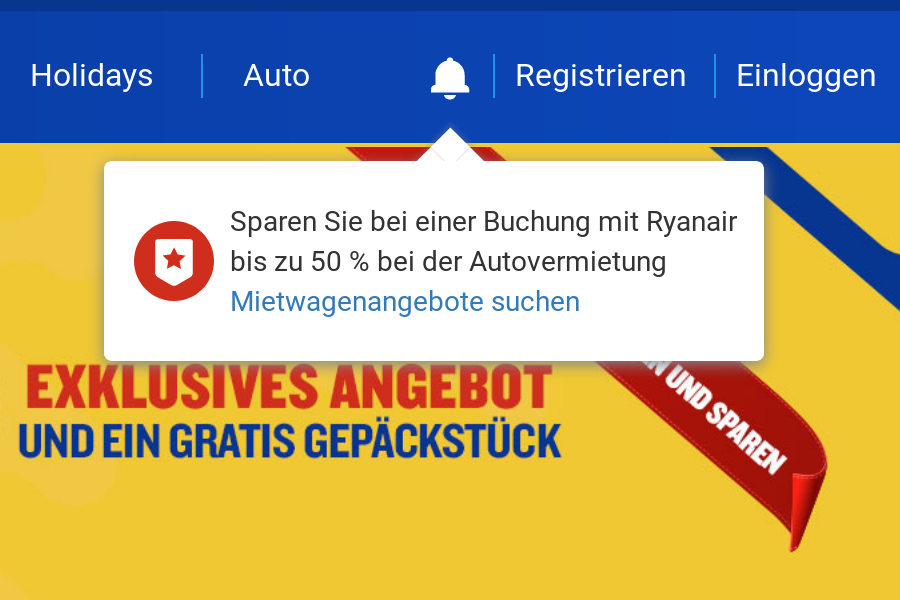7. Todsünde: Gier
Der Wunsch, mehr Geld oder Besitz anzusammeln und / oder zu behalten, als man braucht.
Auch: Sich einfach besser zu fühlen, als jemand anderes. Ähnlich der Völlerei.
Benutzern die Möglichkeit geben immer mehr von etwas zu sammeln oder zu konsumieren um sie z.B. auf der Webseite zu halten.Gier - Ausnutzung
Benutzer gierig machen:
- sammeln von Likes / Freunden
- unendlich vielen Inhalten (infinite scroll)
- pull-to-refresh (einarmiger Bandit)
- …
Gier - Ausznutzung - Beispiele
Twitter - Social Network
- sammeln von Likes / Freunden (siehe Völlerei)
- unendlich vielen Inhalten (siehe Völlerei)
- pull-to-refresh (einarmiger Bandit)
(Suchterzeugend (manipulierend) wie ein Spielautomat) - …
https://twitter.com/jonasjacek
Gier - Ausznutzung - Beispiele
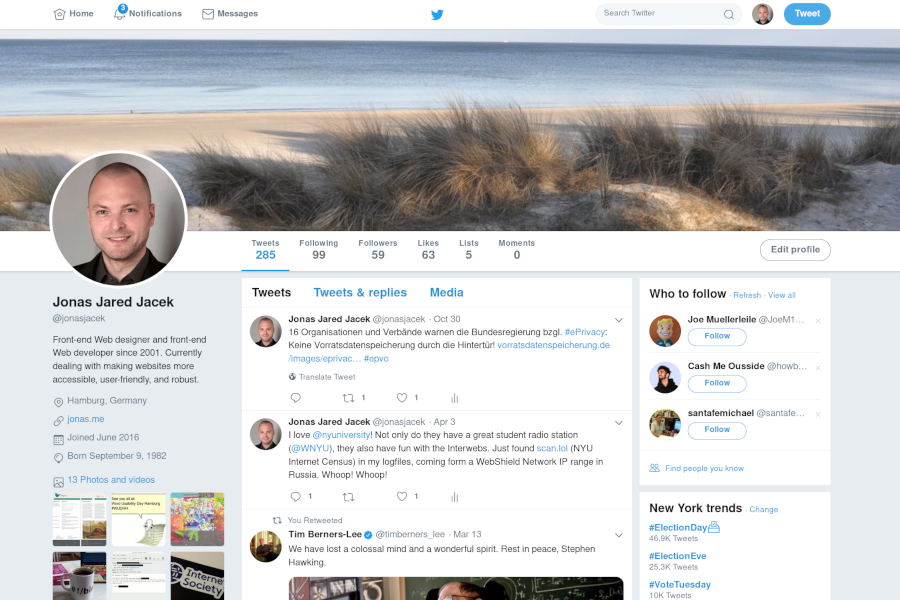Teil 3
Tipps
Manipulative Designtechniken richtig (positiv) einsetzen.
Funktionsweise
Die Umkehrung von Richtlinien, Prinzipien und Methoden für ethisches Design, geht auf Kosten der Benutzer(freundlichkeit).
Umkehrschluss
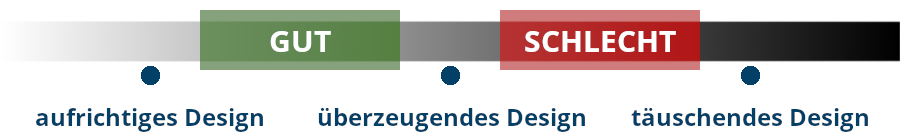Die Einhaltung von Richtlinien, Prinzipien und Methoden für ethisches Design, erhält die Benutzer(freundlichkeit).
Learn the rules like a pro, so you can break them like an artist.Pablo Picasso
Rules?
Der erste Schritt sollte sein, technologische Standards und best practices einzuhalten.
Die Vorgaben sind öffentlich zugänglich, quantifizierbar und überprüfbar:
Webstandards
Von den Standardisierungsorganisationen (W3C, IETF, ISO, etc.) → Standards für World Wide Web und Internet.
Webstandards
- HTML Spezifikation
Richtlinien für die korrekte Verwendung von HTML. - Web Content Accessibility Guidelines
Richtlinien für Barrierefreiheit im World Wide Web. - …
Diese Guidelines helfen das gröbste zu verhindern.
Aufrichtiges Design
Design orientiert sich am Benutzer und seinen vielfältigen Bedürfnissen, auch auf Kosten kurzfristiger Gewinne (z.B. Conversion Rate).Ethik
Wie finde ich heraus ob mein Design ethisch ist? Moralisch? Verantwortungsvoll?
Große Fragen …
Am einfachsten:
Macht Benutzer-Tests!
Persönliche Technik
Kann ich meinen Eltern die Benutzung zumuten?
Können die das Design verstehen und durchschauen oder werden sie getäuscht?
Vorschläge? Lassen Sie uns diskutieren …
Teil 4
Literaturhinweise
Hinweise zu Büchern, Webseiten und Videos.
Literaturhinweise - Bücher
- Evil by Design: Interaction Design to Lead Us into Temptation
Chris Nodder - ISBN: 9781118422144 - 100 Things Every Designer Needs to Know About People
Susam Weinschenk - ISBN: 8580001054513 - The Design of Everyday Things
Don Norman - ISBN: 9780465050659
Literaturhinweise - Web
- Wikipedia: Dark Pattern
https://en.wikipedia.org/wiki/Dark_pattern - Dark Patterns Collection
https://darkpatterns.org/ - Dark Patterns: Deception vs. Honesty in UI Design
https://alistapart.com/article/dark-patterns-deception-vs.-honesty-in-ui-design - Dark Patterns And Other Design No-Nos For Mobile
https://www.smashingmagazine.com/2018/09/dark-patterns-and-other-design-no-nos-for-mobile/ - The Good, the Bad, and the Ugly of Dark Patterns
https://1stwebdesigner.com/dark-patterns-good-bad-ugly/ - Asshole Design
https://www.reddit.com/r/assholedesign/
Vielen Dank!
Author: Jonas Jared Jacek · License: CC BY-NC-ND 4.0Onlineversion unter: